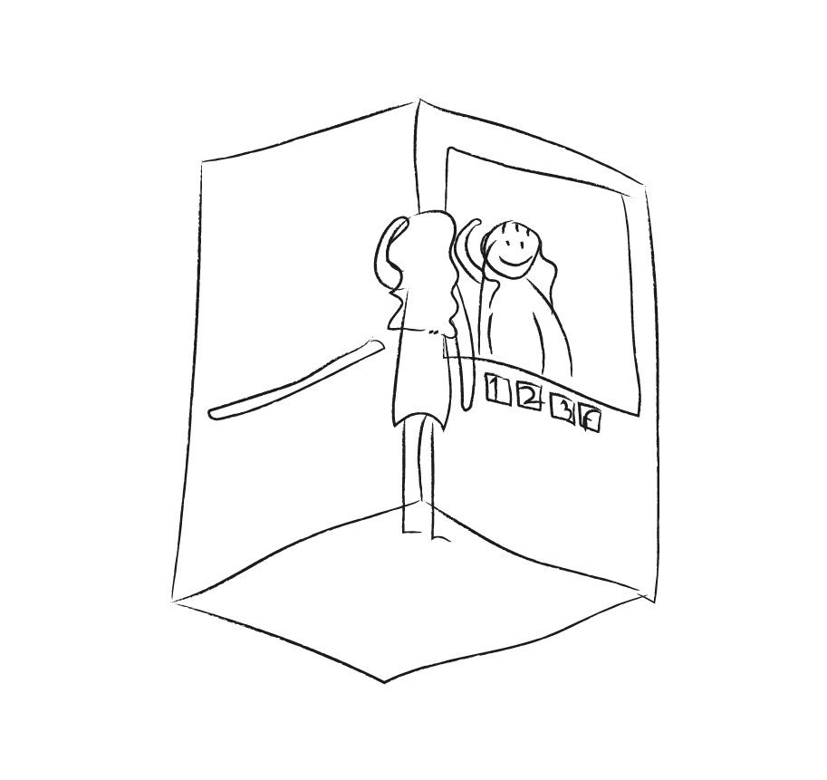
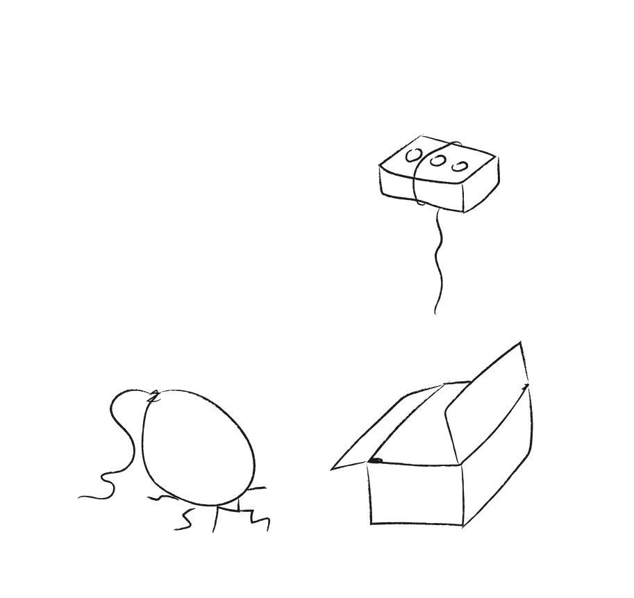
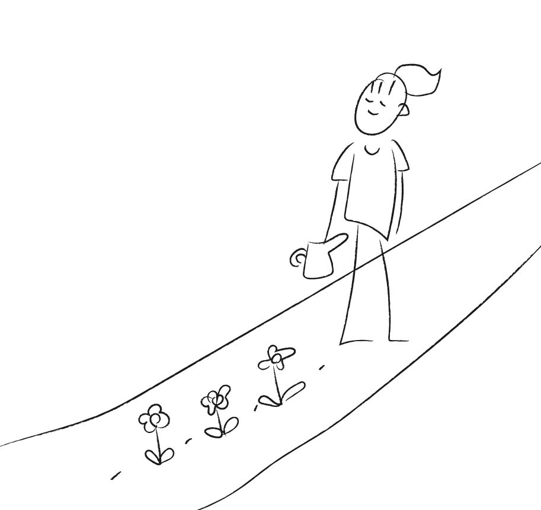

pure:
It was not the faster elevators that satisfied the customers of the department store that had very slow elevators, but the large mirrors installed in the elevators. Empathy for users and stakeholders helps to reach the essence of the problem. With purity, I try to feel the essence of the problem with my whole body.
wit:
Even in the midst of crises, sometimes the light thoughts made a breakthrough. What determines the weight of a situation or problem? What if there was a balloon that was too heavy and broke the floor, and a brick that was so light that it flew away as soon as the box was opened? I don't think there is an absolute weight tag in every problems, and I think everyone gives a different weight tag to their problems. I want to be a person who makes somewhat heavy problems float up, and makes people have fun.
wise:
I want to be a person who wisely judges whether or not I've been walking well rather than just looking ahead and updating the scorecard. We believe good design is one that is sustainable and provides good impact from a consequential point of view. In order to become such a designer, I have been trained responsibility and wisdom.